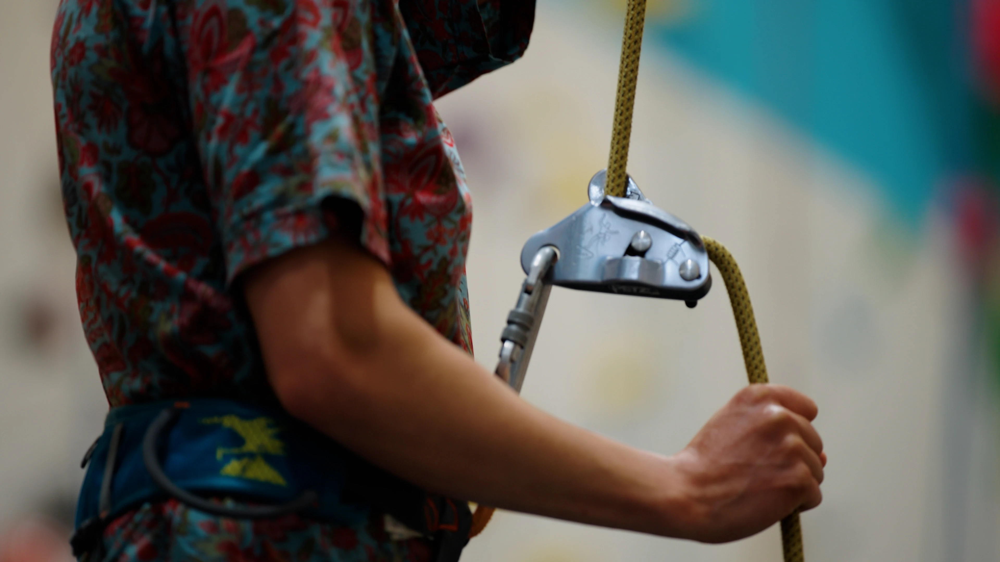

l'ASBL La Trace
Présentée pas les participant-es et animateur-ices
Vidéo réalisée pour présenter l'ASBL la Trace qui propose aux personnes qui ont des problèmes d'addictions ou de santé mentale des activités "aventures". Le sport en plein air devient un outil pour se retrouver, se reconnecter à son corps, à la nature et aux participant-es. La vidéo sera utilisée dans des centres de santé mentale et des hopitaux afin de pouvoir amener d'autres personnes vers l'association. Elle ne sera donc pas diffusé sur internet. Voici néanmoins quelques arrêts :
